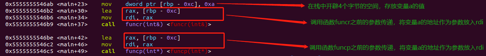

深入理解 C++ 中的引用和指针
首先引用一段 Stroustrup 在 C++ Style and Technique FAQ 中的一段话
Why does C++ have both pointers and references?
C++ inherited pointers from C, so I couldn’t remove them without causing serious compatibility problems. References are useful for several things, but the direct reason I introduced them in C++ was to support operator overloading.
引用和指针的定义
引用（reference）：一个已经存在的对象的别名，引用并非对象。指针（pointer）：用来存放地址的一种类型，指向内存中某块存储单元，指针本身就是对象。
从引用不是对象，指针是对象来看他们的区别：
- 引用不是一个对象，故程序不会为一个引用分配内存区域；而指针本身就是一个对象，故程序会为指针变量分配内存区域。
- 引用不可以为空，在定义时必须初始化，且之后无法改变；指针可以不初始化（不推荐），在生命周期内可以指向不同的对象。
1
2
3
4
5
6int i, j;
int &reference; //非法，引用必须初始化
int &reference = i; //合法
reference = j; //非法，引用并非对象，不能对其进行赋值操作
int *pointer; //合法，指针是一个对象，不进行初始化可以通过编译
pointer = &j; //合法，指针是一个对象，可以对其进行赋值操作 - 引用只能为一级，指针可以为多级。
1
2
3
4int **pointer1; // 合法。指向指针的指针
int *&reference1; // 合法。指向指针的引用
int &*pointer2; // 非法。指向引用的指针是非法的
int &&reference2; // 非法。指向引用的引用是非法的
Tips：对于上面的 reference1 怎么理解它的类型，最简单的办法是从右往左阅读 reference1 的定义。离变量名最近的符号（此例中是 &reference1 的符号
&）对变量的类型有最直接的影响，因此 reference1 是一个引用。声明符其余的部分可以确定 reference1 引用的类型是什么是，此例中的符号*说明 reference1 引用的是一个指针。最后，声明的基本数据类型部分指出 reference1 引用的是一个 int 指针。
- 没有空引用，但有空指针（nullptr）。
引用传递和指针传递
在写函数的形参的时候，我们可以使用引用传递和指针传递，达到在函数中对实际变量的内存空间操作的目的。当指针和引用作为函数的参数是如何传值的呢？
- 引用传递过程中，被调函数的形式参数也作为局部变量在栈中开辟了内存空间，但是这时存放的是由主调函数放进来的实参变量的地址。被调函数对形参的任何操作都被处理成间接寻址，即通过栈中存放的地址访问主调函数中的实参变量。正因为如此，被调函数对形参做的任何操作都影响了主调函数中的实参变量。
- 指针传递参数本质上是值传递的方式，它所传递的是一个地址值。值传递过程中，被调函数的形式参数作为被调函数的局部变量处理，即在栈中开辟了内存空间以存放由主调函数放进来的实参的值，从而成为了实参的一个副本。值传递的特点是被调函数对形式参数的任何操作都是作为局部变量进行，不会影响主调函数的实参变量的值。
从高级程序员的角度来看，引用传递和指针传递是不同的。虽然它们都是在被调函数栈空间上的一个局部变量，但是任何对于引用参数的处理都会通过一个间接寻址的方式操作到主调函数中的相关变量，又因为引用不是一个对象，所以在被调函数的函数体中是不可以改变引用的指向的，被调函数对引用的任何操作，都会实际上反射到调用函数传过来的实参变量上。而对于指针传递的参数，如果改变被调函数中的指针地址 （指针是一个对象，如果没有被声明为常量指针，在被调函数中是可以重新赋值的），它将影响不到主调函数的相关变量。从这个角度来看，引用比指针是更安全的。
那么引用传递和指针传递在机器指令层面上有什么区别吗？性能上是否有所差距？
对于如下的 cpp 代码编译，进行反汇编：
1 | void funcr(int &a){ |
得到 main 函数在调用 funcr 和 funcp 处的汇编代码：

可以看到，无论是引用传递还是指针传递，在汇编层都是传递变量的地址，这样的话，引用传递和指针传递实际上得到机器指令应该是一样的，那性能也是一样的。那我们可以这样理解引用传递和指针传递，这两种传参方式只是在编译层面有所不同，是属于高级语言本身的特质，仅仅在语义检查的时候进行区分，而不是在二进制代码进行区分。
心得：可以用引用传递的地方一定用引用传递而不用指针传递，把琐碎的事情留给编译器去检查，加强程序的安全性。
参考资料：《C++ Prime》 C++ Style and Technique FAQ